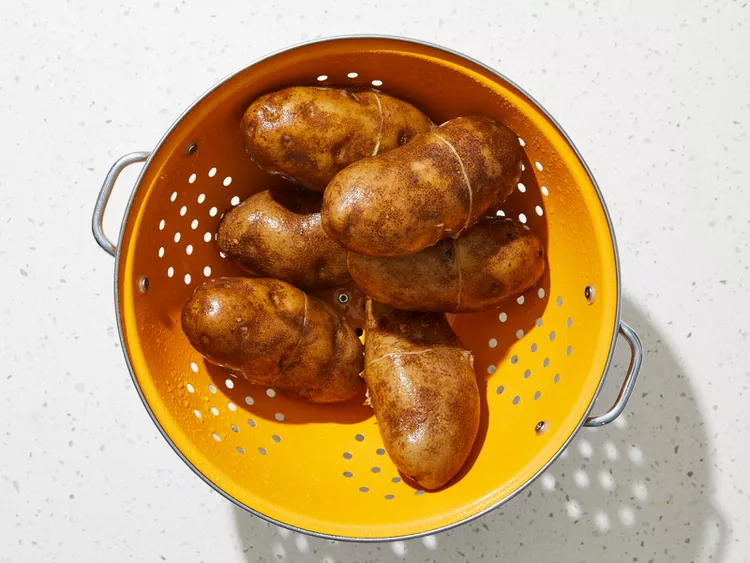
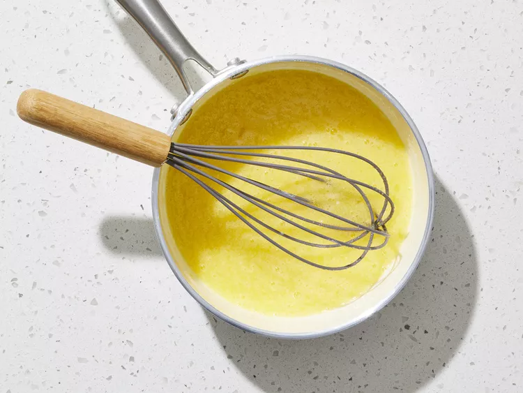
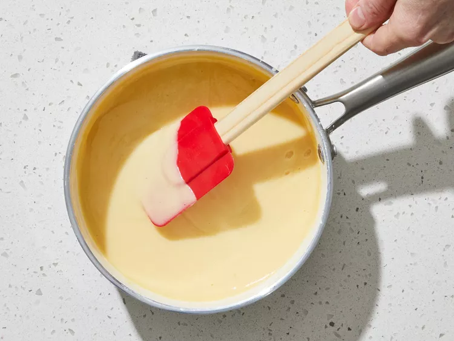
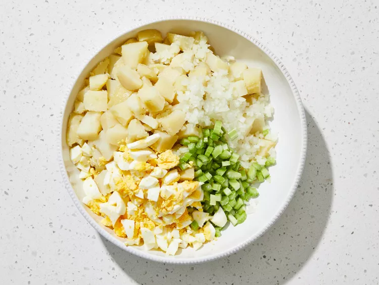
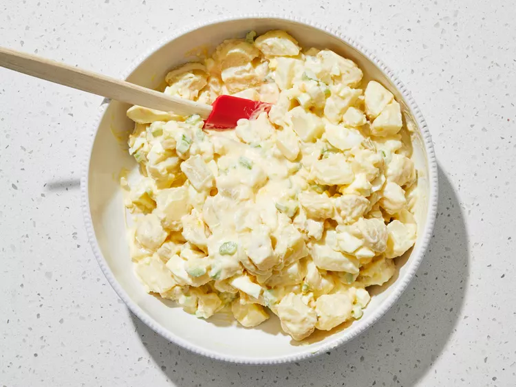

This best-ever potato salad is the creamiest, richest potato salad you will ever try. I get nothing but raves everytime I make this.
Submitted by Kaye Lynn | Updated on November 19, 2024
✅ Tested by Allrecipes Test Kitchen
Original recipe (1x) yields 6 servings
Place potatoes in a large pot and cover with salted water; bring to a boil. Reduce heat to medium-low and simmer until tender, about 20 minutes. Drain and set aside to cool.
Credit: Dotdash Meredith Food Studios
While the potatoes are cooking, whisk together sugar, 2 beaten eggs, and cornstarch in a saucepan; season with salt.
Credit: Dotdash Meredith Food Studios
Stir in milk, vinegar, and mustard. Cook and stir over medium heat until thickened, about 10 minutes. Remove from heat and stir in butter. Refrigerate until cool, then stir in mayonnaise.
Credit: Dotdash Meredith Food Studios
Peel and dice potatoes. Transfer to a large bowl; toss with hard-cooked eggs, onion, celery, and 1 teaspoon salt.
Credit: Dotdash Meredith Food Studios
Stir dressing gently into the bowl of potato salad until evenly coated.
Credit: Dotdash Meredith Food Studios
Chill before serving, 3 hours to overnight.

Credit: Dotdash Meredith Food Studios
Home